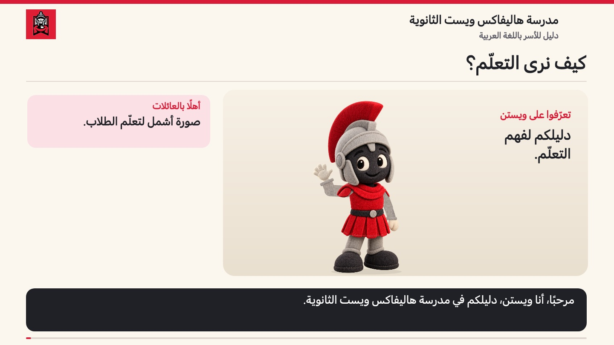

المنتج
عمل يُنشئه الطلاب أو يُنجزونه، مثل الاختبارات والواجبات والمشروعات والعروض التقديمية.

جميع المواد. صورة أشمل للتعلّم.
انضمّوا إلى ويستن للتعرّف على ما يُنتجه الطلاب وما يشرحونه وما يُطبّقونه، وكيف يستخدم المعلّمون هذه الأدلّة.

خيار تقليل الحركة مفعّل: استمع إلى التعليق الصوتي مع صور ثابتة لكلّ فصل.
تعذّر تحميل الفيديو أو الصوت. اقرأ النصّ الكامل أدناه.
الصوت: زارية · نصّ بالعربية الفصحى وصوت سعودي
سؤالان مختلفان
عمل يُنشئه الطلاب أو يُنجزونه، مثل الاختبارات والواجبات والمشروعات والعروض التقديمية.
يشرح الطلاب طريقة تفكيرهم في النقاشات واللقاءات والمقابلات والتأمّلات.
يُظهر الطلاب المهارات والعمليات والتعلّم أثناء الأنشطة العملية.
تقييم يُستخدم لتقديم ملاحظات توجّه الخطوات التالية. يستفيد الطلاب منها في التدرّب والمراجعة والتحسين.
تقييم يُستخدم لتقييم التعلّم وفق معايير محدّدة. ويمكن أن يعتمد على المنتجات أو المحادثات أو الملاحظات.
تصف الحروف P وC وO أنواع أدلّة التعلّم. ولا تُنشئ تلقائيًا ثلاثة أجزاء متساوية من الدرجة.
قراءة عنوان في باورسكول
C — SUM — Explaining a literary interpretation
محادثة ختامية لتقييم فهم نصّ. يحتفظ المثال بعنوان باورسكول باللغة الإنجليزية وبترتيبه من اليسار إلى اليمين، وتظهر ترجمته بالعربية. اقرأ الوصف وملاحظات المعلّم لمعرفة التعلّم الذي يجري تقييمه.
التسليم والفهم
إنجاز العمل وفهم ما تمّ تعلّمه أمران مختلفان. راجع حالة تسليم المهمّة إلى جانب ملاحظات المعلّم، فالعمل المُسلَّم قد يظلّ بحاجة إلى تحسين. وقد لا تظهر بعض أنشطة التدريب في الصفّ كإدخالات منفصلة في باورسكول. يمكن للمعلّم أن يوضّح أين تجد المهامّ اليومية، وكيف تتابع الأعمال التي لم تُسلَّم.
ماذا تتعلّم؟
ما الملاحظات التي تلقّيتها؟
ما خطوتك التالية؟
مرحبًا، أنا ويستن، دليلكم في مدرسة هاليفاكس ويست الثانوية. في جميع المواد، يُظهر الطلاب ما تعلّموه من خلال ما يُنتجونه، وما يشرحونه، وما يُطبّقونه عمليًا. لنرَ كيف نقرأ هذه المعلومات في نظام باورسكول.
نبدأ بأهداف تعلّم واضحة ومعايير واضحة للنجاح. في الرياضيات واللغة الإنجليزية والعلوم والتربية البدنية وغيرها من المواد، نسأل: ماذا يفهم الطالب، وماذا يستطيع أن يفعل؟
يرمز الحرف P إلى المنتج: أي عمل يُنشئه الطالب أو يُنجزه. يمكن أن يُظهر حلّ مسألة رياضية أو مقال أو اختبار أو تقرير مختبر ما تعلّمه الطالب. والعمل المُنجز هو جزء من الصورة الكاملة.
يرمز الحرف C إلى المحادثة: حين يشرح الطلاب طريقة تفكيرهم. قد يشرحون استراتيجية، أو يدعمون تفسيرًا، أو يناقشون نتيجة علمية. يستمع المعلّم لتقييم الفهم وفق معايير التعلّم.
يرمز الحرف O إلى الملاحظة: أي المهارات والتعلّم اللذان يظهران أثناء التطبيق العملي. في الأحياء، قد يكون ذلك ضبط تركيز المجهر؛ وفي التربية البدنية، التحكّم في تنطيط الكرة أو تطبيق مهارة حركية. ينظر المعلّم إلى التقنية والفهم المرتبطين بهدف التعلّم.
يشير الرمز FORM إلى التقييم التكويني، الذي يُستخدم لتقديم ملاحظات توجّه الخطوات التالية. يستخدم الطلاب هذه الملاحظات للتدرّب والمراجعة والتحسين. ويساعدهم ذلك على الإجابة عن سؤال: ما الذي ينبغي أن أعمل عليه بعد ذلك؟
يشير الرمز SUM إلى التقييم الختامي، الذي يُستخدم لتقييم التعلّم وفق معايير محدّدة. يمكن استخدام المنتجات والمحادثات والملاحظات لأيّ من الغرضين: التكويني أو الختامي. ولا تمثّل أنواع الأدلّة هذه ثلاثة أجزاء متساوية من الدرجة.
في نظام باورسكول، يحدّد الحرف الأول نوع دليل التعلّم. ويحدّد الرمز FORM أو SUM الغرض من التقييم، ويليه عنوان واضح للمهمّة. فمثلًا، يشير العنوان الذي يبدأ بالحرف C ثم SUM ثم شرح تفسير أدبي إلى محادثة ختامية لتقييم فهم نصّ.
إنجاز العمل وفهم ما تمّ تعلّمه أمران مختلفان. راجع حالة تسليم المهمّة إلى جانب ملاحظات المعلّم، فالعمل المُسلَّم قد يظلّ بحاجة إلى تحسين. وقد لا تظهر بعض أنشطة التدريب في الصفّ كإدخالات منفصلة في باورسكول. يمكن للمعلّم أن يوضّح أين تجد المهامّ اليومية، وكيف تتابع الأعمال التي لم تُسلَّم.
في المنزل، اسأل: ماذا تتعلّم؟ ما الملاحظات التي تلقّيتها؟ ما خطوتك التالية؟ إذا كان أحد الإدخالات غير واضح، فتواصل مع المعلّم. معًا، نستطيع دعم الخطوة التالية في التعلّم.